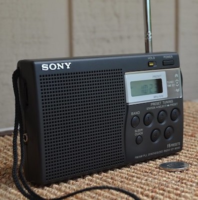

Digital Communications
## Communications .. is the act of conveying meanings from one entity or group to another through the use of <span style="color:red">mutually understood</span> signs, <span style="color:red">symbols</span>, and semiotic rules.
## History Early means of communicating over a distance included ..
## History  #### Semaphore Flags
## History  #### Telegraph
## Modern Day 20th- and 21st-century technologies for long-distance communication usually involve electrical and electromagnetic technologies ..
## Modern Day  #### Radio
## Modern Day  #### Fiber Optics
## Modern Day  #### Satellites
## Wireless A revolution in wireless communication began in the first decade of the 20th century with the pioneering developments in radio communications by Guglielmo Marconi.
 ### Guglielmo Marconi
Analog - Digital

FM Radio
Bluetooth Headset
## Analog - Digital - Resilience to noise - Features → song information, volume adjustment - [Only need to send "0" or "1"](http://sticksandstones.kstrom.com/appen.html)
Message → Encode → Transmit
→
Receive → Decode → Message
## Signal - Smoke - Light (Electromagnetic Radiation) - Radio Waves (Electromagnetic Radiation) - Sound Waves
## Transmission Medium physical medium that carries a information between the transmitter and the receiver
## Transmission Medium  #### copper wire for electro-magnetic signals
## Transmission Medium  ### free space for radio signals
## Transmission Medium  #### glass optical fibers for optical communications
## Transmission Medium - Spreading → Linear, Spherical - Propagation loss → softer when you're further - Noise → conversations in a bar - Echo/Multi-path/Reverberation
## Spreading 
## Propagation Delay propagation delay is the amount of it takes a communication signal to travel from the source to the destination over a given transmission medium.
## Propagation Delay - speed of radio waves in air ~= 299792458 m/s - speed of sound waves in air ~= 343 m/s - speed of sound waves in water ~= 1500 m/s
## Propagation Delay  one-way trip takes over **1.3s**
## Doppler Effect > It's the apparent change in the frequency of a wave caused by relative motion between the source of the wave and the observer.
Doppler Effect
Doppler Effect
## Multipath 
## Demo [https://chinmay.audio/digi-comms-playground/channel](https://chinmay.audio/digi-comms-playground/channel)
## Frequency  <audio src="440Hz.wav" controls="controls"></audio> <audio src="1kHz.wav" controls="controls"></audio>
## Modulation (Keying) - On/Off Keying → Smoke/No-Smoke - "the presence of a signal for a specific duration represents a 1, else 0"
## Modulation (Keying) - Frequency Shift Keying (FSK) → "One frequency for 0, and another for 1" - Phase Shift Keying (PSK) - Orthogonal frequency-division multiplexing (OFDM)
## Demo [https://chinmay.audio/digi-comms-playground](https://chinmay.audio/digi-comms-playground)
## Bit Rate
## Range
# Questions ?